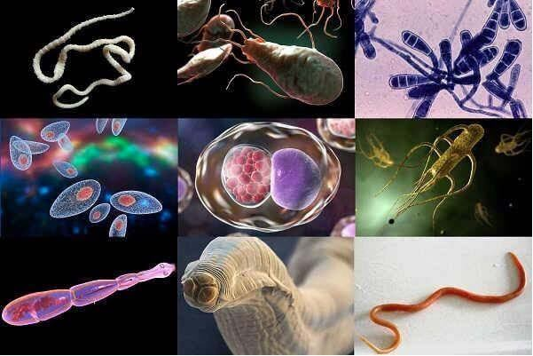
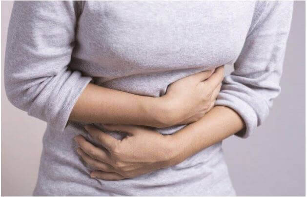

CIKK • EMBER •
PARAZITÁK
Paraziták: a károsodás tünetei. Hogyan tisztítsuk meg szervezetünket és védjük meg magunkat az ismételt fertőzéstől?
Miért van az, hogy mindezek ellenére a paraziták
problémáját nem veszik komolyan
Biztos benne, hogy nincsenek parazitái? Persze, hogy nem, a WHO
évi statisztikái szerint az emberiség 87% fertőzött parazitákkal. Honnan
tudhatja, hogy önnek nincsenek? Ez nagyon nehéz, mert a férgek, szalagférgek ügyesen
álcázzák magukat és gyakran a fertőzés tünetei könnyen összetéveszthetők más
betegségekkel.
Ezért tekintettel a parazitákkal való megfertőződés könnyűségére,
lehetetlen azt mondani, hogy az emberiség azon 10% -ába tartozik, akiknek nincsenek
férgeik.
- Hogyan fertőződnek meg a parazitákkal?
- Honnan tudjam, hogy vannak-e parazitáim?
- Ki van kitéve a fertőzés fokozott kockázatának?
- Mennyire veszélyesek a paraziták?
- Hogyan tisztítsuk meg szervezetünket és védjük meg magunkat az ismételt fertőzéstől?
Ezek a legfontosabb kérdések, amelyek a férgek témájához kapcsolódnak. A
válaszok megkeresésében Földesi Erik, legmagasabb kategóriájú orvos, a Budapesti Orvosi
Egyetem professzora lesz segítségemre.
Földesi professzor olyat mesélt nekem, ami után sürgősen a szervezet
férgektől való megtisztítása mellett döntöttem. Annak ellenére, hogy gondosan betartom a
személyes higiénia szabályait.
Nem tudtam kételkedni a professzor szavaiban, bármennyire is meglepőek
voltak. Ez az az ember, aki 27 disszertációt írt az emberi parazitákról.
Hogyan fertőződnek meg a férgekkel?
- Földesi professzor, az interjú előtt azt mondta, hogy a paraziták mindenhol ott vannak és semmi sem könnyebb, mint megfertőződni velük.
- Nem akarok senkit megijeszteni, de ez tényleg így van. Parazita tojások
mindenhol vannak: a vízben, a ruhákon, a cipőkön, a föld felszínén, a számítógépek
képernyőin, a kilincseken. Vagyis mindenhol, amihez hozzáér az ember.
Az élelmiszer — hal, hús, zöldség és gyümölcs is tele van parazita
tojásokkal. Hogy megfertőződjön a férgekkel, csak érintse meg a fertőzött tárgyat, majd
nyúljon hozzá az arcához. Nem megfelelően mossa meg a gyümölcsöt vagy a zöldséget,
rosszul süti meg a halat vagy a húst.
Jelenleg több mint 360 emberi parazita faj ismert

Természetesen alapvetően az ember a leggyakoribb férgekkel, például
szalagférgekkel, kerekférgekkel, orsóférgekkel és cérnaférgekkel fertőződik meg.
Minden egy egyeddel kezdődik, de a paraziták gyorsan szaporodnak.

A cérnagiliszták például egy éjszaka alatt 2000-15000 tojást raknak le.
Képzelje el a cérnagiliszta kolóniákat egy hét után az emberi szervezetben.
Ez hatalmas számú parazita, amelyek minden nap szaporodnak. Persze, egy bizonyos ponton
a parazita kolónia eléri a határt, de számuk több ezer lesz.
Más típusú paraziták, például a szalagféreg, nem szaporodnak olyan széles
ütemben, de évekig élhetnek az emberi szervezetben.
Honnan tudjam, hogy vannak-e parazitáim?
- Azt mondta, hogy a parazita fertőzést nehéz észrevenni, de biztosan
vannak valamilyen általános jelei?

- Persze, sok jele van annak, hogy a szervezet parazitáktól szenved. Ugyanaz
a fájdalom a köldök területén is azt mondja, hogy fertőzött, valamint az emésztési
problémák is. Ezek többé-kevésbé nyilvánvaló jelek.
Ami a kevésbé nyilvánvaló jeleket illeti, ez sokkal nehezebb. Például, ha
valaki úgy érzi, folyamatosan fáradt, álmos, vagy akár depressziós. Ez utalhat arra,
hogy fertőzött.
Az allergiás reakciók a bőrön is jelzik a férgek jelenlétét a szervezetben.
Nehéz, hogy mind a gyengeséget, mind a bőr allergiát gyakran teljesen más testi
problémákhoz kötik, amelyek nem kapcsolódnak a parazitákhoz.
És csak akkor, ha az orvos vagy az egyén valahogy véletlenül megtudja, hogy
ezek a problémák a férgek miatt is felmerülnek, és megkezdi a szervezet tisztítási
eljárását, szűnhet meg a probléma. A kérdés az, hogy mennyi idő fog eltelni, amíg az
igazi okot – a férgeket – azonosítják.
Ki van kitéve a parazitákkal való fertőzés fokozott kockázatának?
- Vannak emberek, akik hajlamosabbak a fertőzésre?
- Mint korábban mondtam, nagyon könnyű parazitákkal megfertőződni. De ha
olyan emberekről akar tudni, akik fogékonyabbak a fertőzésre, könnyen válaszolhatok erre
a kérdésre.
Ezek a gyenge immunitással és krónikus egészségügyi problémákkal rendelkező
emberek. Szervezetük nem képes legyőzni az élősködőket, férgeket, mivel egy legyengült
szervezetbe jutva gyorsabban szaporodnak, mint általában.
Azok az emberek is, akiknek háziállataik vannak, különösen kutyák. Séta
közben a kutya több ezer parazita tojást hoz a mancsán. A tulajdonosok több mint 90%-a
nem viszi kisállatát a fürdőszobába, hogy megmossa a mancsát. Ezért hamarosan a parazita
tojások mindenhol lesznek, ahol a kutya jár: a konyhában, a fürdőszobában, a padlón, még
a gazdi ruháján is. Nem is beszélve a kanapékról és a karosszékekről, amiken a
háziállatok szeretnek pihenni.
Mennyire veszélyesek a paraziták?
- El is érkeztünk interjúnk lényegéhez. A paraziták nagyon veszélyesek az
egészségre, de valamilyen oknál fogva az emberek alábecsülik ezt a veszélyt. Úgy
gondolom, hogy ennek oka az emberek rossz tájékozottsága arról, hogy a férgek súlyos
csapást mérnek az emberi egészségre.
A férgek elpusztítják az ember immunrendszerét. Mit tehet a
legyengült szervezet? Semmit. Így alakulnak ki a krónikus problémák, amelyektől az ember
éveken keresztül nem tud megszabadulni. Állandó megfázás, képtelen ellenállni a
vírusoknak járvány idején.
A paraziták salakanyagai, toxinjaik fokozatosan felhalmozódnak és megmérgezik a szervezetet. A férgek tápanyag- és vitaminhiányt okoznak a szervezetben, károsítják a szervek szöveteit, bejutnak a tüdőbe, ami által súlyos szövődményeket és betegségeket okoznak. Léteznek olyan tanulmányok, amelyek szerint a férgek az embereknél rosszindulatú daganatok megjelenésének forrásai lehetnek.
Úgy gondolom, hogy ezek az okok elegendőek annak eldöntéséhez, hogy a
megelőző intézkedéseket rendszeresen meg kell tenni és meg kell tisztítani a
szervezetet.
Hogyan tisztítsuk meg szervezetünket és védjük meg magunkat az ismételt fertőzéstől?
- Ossza meg véleményét arról, hogyan védjük meg magunkat a férgektől és
hogyan szabaduljunk meg tőlük.
Először is mindig mindenkit intettem és továbbra is sürgetem a személyes
higiénia szabályainak betartását. Lehet, hogy meglepődnek, de vannak olyan tanulmányok,
amelyek szerint az emberek figyelmen kívül hagyják még az olyan egyszerű és érthető
dolgot is, mint a kézmosás WC látogatás után. Tanulmányoztuk a diákjainkat. Egy hónapig
figyeltük, hogy a fiatalok hány százaléka mossa meg a kezét WC használata után.
Kiderült, hogy mindössze csak 37%.
Mondhatnák, hogy ez a diákok körében gyakori dolog, de tanulmányt végeztünk
üzletemberek és idős gazdag emberek körében is. Itt az eredmény még rosszabb volt – csak
19% mos kezet.
A piszkos kezek pedig nagyszerű módja annak, hogy megfertőzzék férgekkel
nemcsak magukat, hanem szeretteiket is.
Azt is javaslom, hogy ne vegyen utcán ételt, ne igyon nyers vizet, alaposan
tisztítsa meg a ruhákat és a cipőket, féregtelenítse háziállatait, végezzen otthon
nedves takarítást, amilyen gyakran csak lehetséges. És természetesen kezelje a
mobiltelefont speciális fertőtlenítőszerekkel.
Ami a készítményeket illeti, elég nehéz a helyzet. A piacon lévő szerek
többsége nem azért van, hogy segítsen az embereknek megszabadulni a parazitáktól, hanem
azért, hogy a lehető leggyakrabban vásárolják őket.
Igen, néhány szer működik, de nem segítenek olyan hatékonyan, mint kellene.
Nem ölik meg az összes parazitát, nemhogy a lárvájukat. Ezért a megmaradt egyedek tovább
szaporodnak és néhány napon belül ezrek lesznek belőlük.
Számos készítmény megsemmisíti a férgeket is, ugyanakkor megölik az egész
bél mikroflórát, súlyos mellékhatásokkal járnak.
Csak egy készítményt tudok ajánlani, ez nemrégiben jelent meg a piacon, de már nagyon jó hatékonyságot mutatott. A szer neve . Ezek speciális cseppek.
A készítmény szegfűszeg rügyeket, diólevelet, golgotavirággyökeret és sárga tárnicsgyökeret tartalmaz. Ezek az összetevők ismertek antihelmintikus
tulajdonságaik miatt, de csak a közelmúltban vált lehetővé lehetőségeik teljes
körű feltárása és egy formulában való összevonásuk.
Elpusztítja és eltávolítja a parazitákat.
Ha a fő
előnyeiről beszélünk, ez az összes parazita megsemmisítésében való segítség és a
szervezet védelme az ismétlődő fertőzéstől. Nem kell további készítményeket vennie.
A önmagában három fontos feladatot teljesít: segíti a paraziták
megsemmisítését, a szervezet megtisztítását és a későbbi helyreállítását. Megjegyzem
továbbá a mellékhatások teljes hiányát, amelyek az elavult antihelmintikus készítmények
kötelező velejárói.
Segít semlegesíteni a parazita mérgeket.
Megölni a férgeket és
kiüríteni őket — a munka fele. A készítmény segít semlegesíteni a mérgeket, a
salakanyagokat és a toxinokat, amelyek már régóta mérgezték a szervezetet. Ez segít az
embernek jobban érezni magát már a szedés megkezdésének első napjaitól. Megjelenik az
energia, javul a hangulat, az ember ismét érzi az élet örömeit, mivel többé semmi nem
veszi el az energiát, vitaminokat és hasznos anyagokat, amelyeket étellel kap.
Növeli és erősíti az immunitást
A parazitáktól való tisztítás utáni első napokban a szervezet nagyon gyenge,
mindez a legyengült immunitás miatt van. Ilyen pillanatokban parazitákkal megfertőződni
a legegyszerűbb. A megalkotói ezt előre látták. A készítmény egyik hatása – gyors
felépülés és az immunitás megerősítése.
Ha az ember érzéseiről beszélünk, így írnám le:
Emésztés normalizálása
Az ember megszabadul a fájdalomtól és a diszkomforttól a hasban és a belekben. Gyomor-bélrendszere óramű pontossággal működik.
Az ember megszabadul a fájdalomtól és a diszkomforttól a hasban és a belekben. Gyomor-bélrendszere óramű pontossággal működik.
Energia hullám
Megszabadulva a parazitáktól az ember örömmel foglalkozik kedvenc elfoglaltságaival, tölti idejét a barátaival, sportol, végzi a házimunkát. Javul a koncentráció és a memória. A munka könnyebben megy, mint korábban.
Megszabadulva a parazitáktól az ember örömmel foglalkozik kedvenc elfoglaltságaival, tölti idejét a barátaival, sportol, végzi a házimunkát. Javul a koncentráció és a memória. A munka könnyebben megy, mint korábban.
- Professzor, hol lehet megvásárolni Сlean Forte?
- Most a , mint tudom, kizárólag a gyártó
hivatalos weboldalán kapható. Sajnos a versenytársak, ez alatt a nagy gyógyszeripari
cégeket értem, mindent megtesznek, hogy a készítmény ne kerüljön a gyógyszertárak
polcaira.
A szer közvetlen értékesítésével a gyártónak sikerült elkerülnie a hatalmas
mellékköltségeket. Ez hozzájárult ahhoz, hogy a készítményt gyakran hatalmas
árengedményekkel értékesítik.
- Földesi professzor, szeretne még valamit mondani búcsúzóul?
- Persze. A paraziták veszélyesek és komolyan tönkretehetik az életüket.
Kövessék a személyes higiénia szabályait és használjanak valódi és hatékony készítményt
a férgek ellen — mint például a .
Figyelem! Ma és -ig (befejezőleg) a Clean Forte készítmény 50% kedvezménnyel kapható.
A kedvezmény megszerzéséért látogasson el a hivatalos
weboldalra és hagyja meg kérelmét.
Hozzászólások: